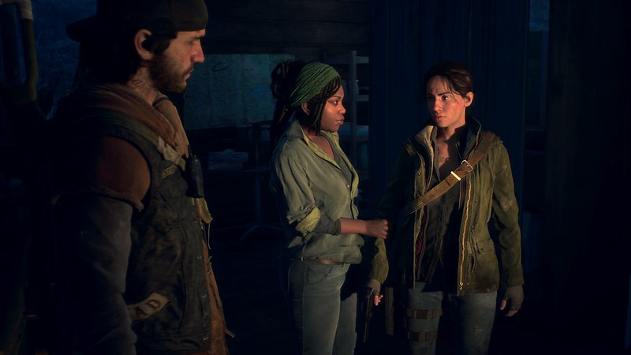
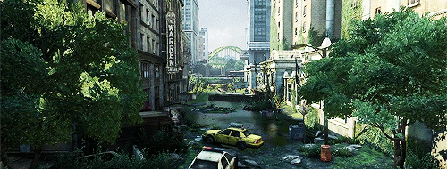
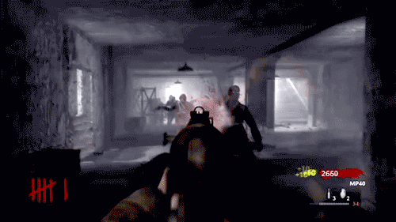
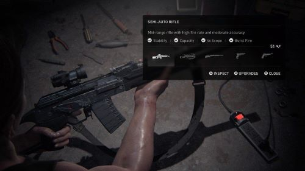

"¡Únete a la lucha contra una epidemia zombie en "Apocalypse Beyond ZombieLand", el videojuego de acción y aventura que te dejará sin aliento!
En un mundo post-apocalíptico infestado de zombies,
el jugador se convertirá en el cazador definitivo, con habilidades mejorables y armas personalizables
para acabar con los no-muertos. Explora una ciudad en ruinas y descubre secretos ocultos mientras
luchas contra jefes épicos y te abres camino a través de hordas interminables de zombies.
¿Quieres ser parte de la solución en la lucha contra una plaga zombie?
¡Únete a nosotros y patrocina
"Apocalypse Beyond ZombieLand" para una experiencia de juego sin igual!
Campaña
Aquí tienes el vídeo promocional de "Apocalypse Beyond ZombieLand".
Cancion original
Contribuciones
Si quieres ser patrocinador de nuestro o apoyar la producción de Apocalypse Beyond ZombieLand . A cambio de su apoyo le daremos agradecimientos por la participación en este gran proyecto. Dependiendo de la aportación del patrocinador ofrecemos distintos pack de merchandising:
Descripción
En resumen, un videojuego de zombies es una experiencia de supervivencia emocionante en un mundo post-apocalíptico lleno de peligros. Los jugadores deben encontrar recursos, sobrevivir a los zombies y otros peligros, y avanzar en la historia del juego para sobrevivir.
Historia
La historia de "Apocalypse Beyond ZombieLand" se desarrolla en un futuro cercano, donde un brote de un virus desconocido ha transformado a la mayoría de la población en zombis. Los jugadores asumen el papel de un pequeño grupo de sobrevivientes que se han unido para luchar contra las hordas de zombis y buscar un refugio seguro.
El grupo está formado por cinco personajes: un exmilitar, un médico, una niña, un mecánico y un superviviente solitario. Cada uno de ellos tiene habilidades únicas y roles específicos en el grupo.

El juego comienza en una ciudad devastada por el brote, donde el grupo debe luchar por su supervivencia contra los zombis y otros sobrevivientes hostiles que están desesperados por conseguir recursos.
A medida que el grupo se abre camino hacia un refugio seguro, descubren pistas sobre el origen del virus y una posible cura. También se encuentran con otros sobrevivientes, algunos de los cuales pueden unirse a su grupo y ayudarlos en su lucha contra los zombis.
Sin embargo, el camino hacia la cura no es fácil y el grupo se enfrenta a una serie de desafíos, como enfrentamientos con grupos enemigos, la necesidad de buscar suministros y el agotamiento emocional de la lucha constante por la supervivencia.
En última instancia, el grupo debe tomar decisiones difíciles y arriesgar todo lo que tienen para llegar a un laboratorio de investigación en busca de la cura. El final del juego depende de las decisiones tomadas por el jugador y del éxito del grupo en su misión.
A medida que el grupo se abre camino hacia un refugio seguro, descubren pistas sobre el origen del virus y una posible cura. También se encuentran con otros sobrevivientes, algunos de los cuales pueden unirse a su grupo y ayudarlos en su lucha contra los zombis.
Sin embargo, el camino hacia la cura no es fácil y el grupo se enfrenta a una serie de desafíos, como enfrentamientos con grupos enemigos, la necesidad de buscar suministros y el agotamiento emocional de la lucha constante por la supervivencia.
En última instancia, el grupo debe tomar decisiones difíciles y arriesgar todo lo que tienen para llegar a un laboratorio de investigación en busca de la cura. El final del juego depende de las decisiones tomadas por el jugador y del éxito del grupo en su misión.
Gameplay
En cuanto a la jugabilidad, el juego incluirá un sistema de combate en tiempo real donde el jugador podrá utilizar diferentes tipos de armas, como pistolas, escopetas, rifles, explosivos y armas cuerpo a cuerpo, para enfrentar a los zombies. También se incluirán diferentes tipos de zombies, cada uno con sus propias habilidades y debilidades, lo que obligará al jugador a adaptar su estrategia de juego en consecuencia.
Además, el jugador debe lidiar con los zombies, que pueden aparecer en grandes hordas o en solitario y presentar diferentes niveles de dificultad.
Además, el juego también incluirá un sistema de crafting, lo que permitirá al jugador crear y mejorar sus propias armas, equipo y refugios, así como un sistema de habilidades que se pueden desbloquear a medida que el jugador avanza en la trama.
En resumen, la jugabilidad de este videojuego de zombies inventado incluirá exploración, combate, crafting y diferentes modos de juego que ofrecerán una experiencia de juego variada y emocionante para el jugador.
Objetivos
¡Ayuda a hacer realidad nuestro juego! Para llevar a cabo nuestro proyecto, necesitamos alcanzar un mínimo de 75.000 € en nuestra campaña de crowdfunding. Si alcanzamos este objetivo, podremos continuar con el desarrollo del juego y asegurarnos de que llegue a manos de los jugadores de todo el mundo.
Además del objetivo mínimo, tenemos otros objetivos extra de dinero que pueden ayudarnos a mejorar el juego y ofrecer una experiencia aún más emocionante. Aquí están los objetivos extra y lo que se añadirá si los alcanzamos:
Con tu ayuda, podemos hacer que nuestro juego sea aún mejor. ¡Únete a nosotros en nuestra campaña de crowdfunding y ayúdanos a hacer realidad este emocionante proyecto!
Equipo
| Participantes | Tareas | Tareas videojuego |
|---|---|---|
| Aitor Alarcón Ortega | PechaKucha | Programador |
| Laura Blázquez Pelaz | Página principal y menús de navegación | Diseñadora personajes |
| Cristina González de Lope | Elevador Pitch y canción original | Diseñadora de items |
| José Ignacio González Vicente | Video promocional y redes sociales | Guionista |
| Cristine Nioka Tewo | Contribuciones y objetivos | Música y sonido |
| Héctor Santamaría Teclemayer | Campaña | Programador |
| Nuria Serrano Martín | Preguntas frecuentes y comentarios | Diseñadora niveles |
Preguntas frecuentes
¿En qué plataformas estará disponible el juego?
Apocalypse Beyond Zombie Land es un juego multiplataforma disponible en Xbox, Playstation 4, Nintendo Switch, iOS, Android y Windows. El juego multiplataforma requiere una cuenta de Microsoft. Es necesario Xbox Live Gold para multijugador en línea en Xbox. Es necesaria una suscripción a PlayStation Plus para el multijugador en línea en PlayStation 4. Es necesaria la suscripción a Nintendo Switch Online para el multijugador en línea en Nintendo Switch.
¿Cuándo será la fecha de lanzamiento del juego?
El lanzamiento de Apocalypse Beyond Zombie Land será el 18 de junio de 2023. Prepárate para explorar un nuevo mundo y detener la invasión de los zombies.
¿Habrá una fase beta para probar el juego antes del lanzamiento?
Actualmente, no se ha anunciado ninguna fase beta por lo que los jugadores tendrán que esperar el lanzamiento completo del juego para obtener acceso sin restricciones.
¿Cuál es el precio del juego?
El precio de Apocalypse Beyond Zombie Land variará según la plataforma de juego preferida. Los jugadores suscritos a Xbox Game Pass o PC Game Pass de Microsoft tendrán acceso gratuito.
¿Cuál es la clasificación por edad del juego?
La edad mínima requerida para jugar Apocalypse Beyond Zombie Land es 16+. Todos los jugadores más jóvenes que tengan una cuenta de WarpZone Games pero que sean menores de 16 años no podrán descargar el cliente del juego Apocalypse Beyond Zombie Land ni jugar.
¿Qué idiomas serán compatibles con el juego?
Los idiomas disponibles actualmente en Apocalypse Beyond Zombie Land son: Inglés, Alemán, Español (España y Latinoamérica), Francés, Indonesio, Italiano, Portugués, Ruso, Turco, Chino, Japonés, Coreano y Thailandés.
Comentarios
Videojuego realizado por:
Nuria Serrano Martín
José Ignacio González Vicente
Cristine Nioka Tewo
Héctor Santamaría Teclemayer
Aitor Alarcón Ortega
Cristina González de Lope
Laura Blázquez Pelaz
De la compañía "WarpZone Games"
¡Siguenos en nuestras redes sociales para no perderte nada!